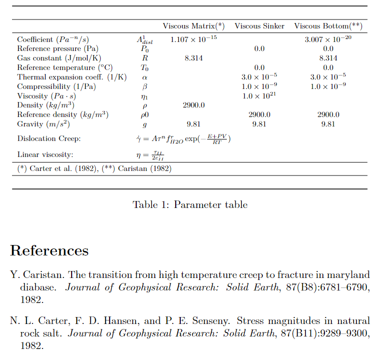
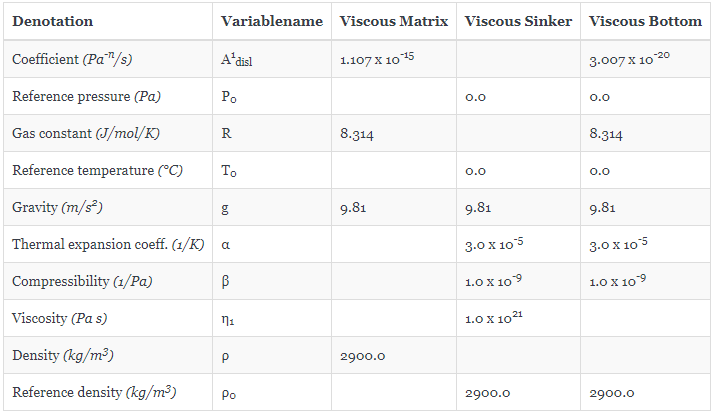

Tables
There are two different formats of output tables that can be produced:
- LaTeX (always comes with "References.bib" for citations)
- Markdown
Producing output table
ParameterTable() is used to produce an output table of all the material parameters in your phase(s) in LaTeX or Markdown format. All you need is a dimensional phase as defined in section 2. Material Parameters in the README.md of GeoParams. This phase should be given to ParameterTable as first argument. There are optional arguments which can be given in ParameterTable. Those are format, filename and rdigits. The format keyword determines whether your table should be in LaTeX or Markdown format (should be given as string). filename determines the name of the file but can also be used to save the file in a different directory other than the GeoParams package directory (should be given as string, note: no file endings needed since they will be determined by the format keyword!). rdigits gives the numbers of decimals to which all parameter values will be rounded (should be given as integer).
Example 1:
julia> MatParam = SetMaterialParams(Name="Viscous Matrix", Phase=1,
Density = ConstantDensity(),
CreepLaws = LinearViscous(η=1e23Pa*s))
julia> ParameterTable(MatParam, format="tex", filename="ParameterTable", rdigits=4)
Example 2:
julia> ParameterTable(MatParam, format="md", filename="ParameterTable", rdigits=4)
GeoParams.Tables.ParameterTable — FunctionParameterTable() creates a table with all parameters saved in the Phase struct. It lets you choose between "latex" and "markdown" as table formats with LaTeX as default. Creates a filename.tex or filename.md file as output. If "latex" is chosen a "Reference.bib" file will automatically be produced with all your references. Storage path by default is the GeoParams package folder. A specific storage path can be given as normal path with "\filename" in the end as a string. Use double backslash for subfolders. There is no file extension needed to be given.
GeoParams.Tables.Phase2Dict — FunctionPhase2Dict() puts all parameters of a phase s in a dict.
GeoParams.Tables.Phase2DictMd — FunctionPhase2DictMd() puts all parameters of a phase in a dict.
GeoParams.Tables.Dict2LatexTable — FunctionDict2LatexTable() writes a .tex file with all parameters from the Phase2Dict() output in a LaTeX table. rdigits will round numbers with more decimals than rdigits including numbers of 10 to power of n, n being an Integer, for representation purposes. For the exact numbers use the original implemented numbers from the creeplaws of the dict in src/CreepLaw/Data/DiffusionCreep.jl or src/CreepLaw/Data/DislocationCreep.jl.
GeoParams.Tables.Dict2MarkdownTable — FunctionDict2MarkdownTable() writes a .md file with all parameters from the Phase2DictMd() output in a Markdown table. rdigits will round numbers with more decimals than rdigits including numbers of 10 to power of n, n being an Integer, for representation purposes. For the exact numbers use the original implemented numbers from the creeplaws of the dict in src/CreepLaw/Data/DiffusionCreep.jl or src/CreepLaw/Data/DislocationCreep.jl.
GeoParams.Tables.detachFloatfromExponent — FunctiondetachFloatfromExponent() returns the number of float decimals after the comma as Integer, the float number without the exponent as string and the exponent after the "e" as string. The argument output returns "1" for "ex" if the input number has no exponent.